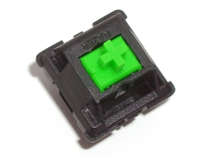
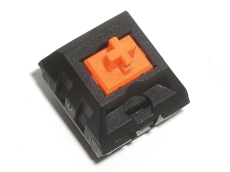

Razer green er en tast laget i sammarbeid av Razer og Kailh. Den er brukt i Razer sine Blackwidow og Orbweaver tastatur. Razer green sin aktiveringsmetode er lik Cherry sin MX Blue variant.

Razer green er en tast laget i sammarbeid av Razer og Kailh. Den er brukt i Razer sine Blackwidow og Orbweaver tastatur. Razer orange sin aktiveringsmetode er lik Cherry sin MX Red variant.
 Dette er en tast lager i sammarbeid mellom Steelseries og Kailh. Den er så langt bare bukt i Steelseries sin Apex M800 og har en aktiveringskraft på 45 centiNewton. Den har en spesiell følelse på tastetrykk, men den sammenlignes ofte med Cherry MX Red taster.
Dette er en tast lager i sammarbeid mellom Steelseries og Kailh. Den er så langt bare bukt i Steelseries sin Apex M800 og har en aktiveringskraft på 45 centiNewton. Den har en spesiell følelse på tastetrykk, men den sammenlignes ofte med Cherry MX Red taster.